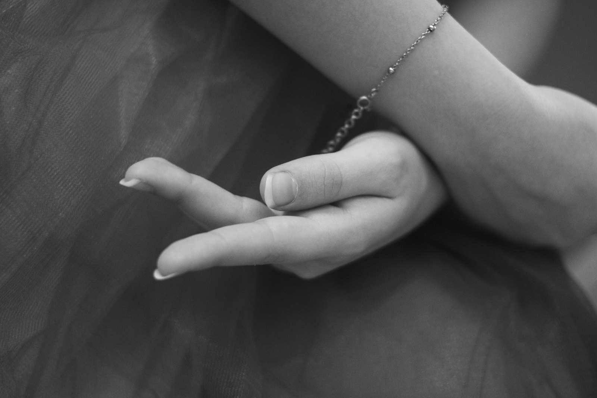
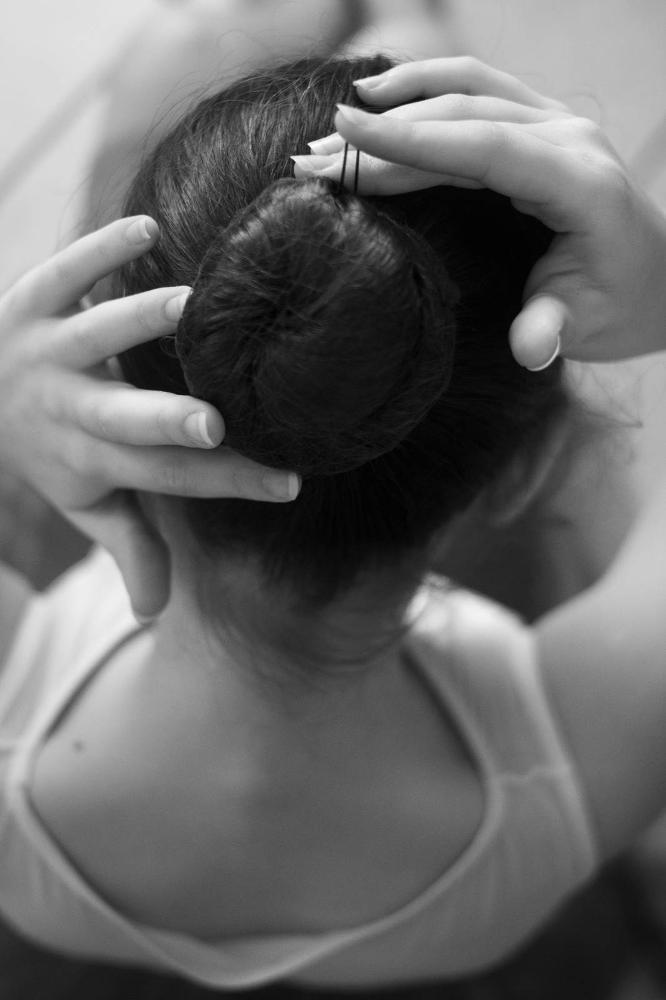

Certo, ci saranno sempre quelli che guardano solo alla tecnica, che chiedono “come”, mentre altri di natura più curiosa chiederanno “perché”. Personalmente, ho sempre preferito l’ispirazione all’informazione. (Man Ray)
Fotografare per me significa catturare attimi, attimi per ricordare, per poter osservare meglio ciò che a volte ci sfugge, come se bloccassimo il tempo per qualche secondo e lo analizzassimo al meglio.